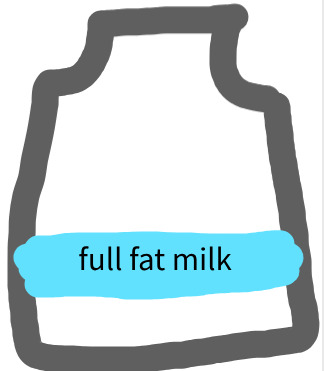
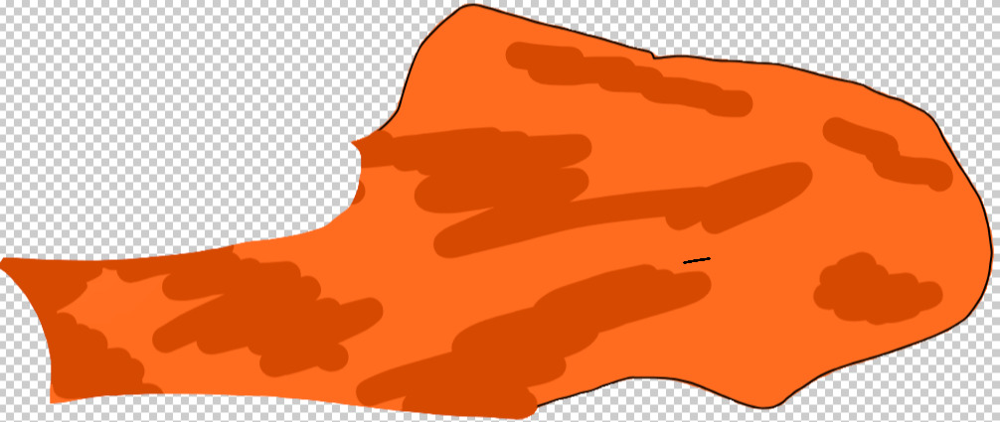

We can offer the customers a wide range of sauces, like tomato, ranch, hot sauce, and many more. We can make custom suaces as long as the ingredients are available.
We can offer the customers a wide range of varities such as honey aged steaks, red wine aged steaks and just plain aged steaks. But they are mainly aged for 28 or more days then we can offer it as a matured aged steak.
We mainly offer soft drinks, water, juices, milkshakes and milk. Though this is usually a sider to the main product we serve. This is to have the customers feel refreshing but you don't have to have it with a meal. Some of the drinks cannot be sold or brought in some of the seasons or might have less of. Like milk might be more aviable during the summer time than in winter because it is cooler so less production. This would be similar reasons why juices would be mainly out in the summer compared to the winter. Though the only one not affected would be water because that is all year round sale.

In terms of customizing the steak by request of milk or butter to the steak yes we can do that. But if it terms of adding more ingredients like pea protein, corn starch or water then no. Adding water or would make the customer feel disapointed because the steak have gotten smaller what they have previously brought. For some of the steaks we can offer them custom shapes though you cannot do shapes that are inapropriate to sell for example the shape must be kid friendly as well. Though there are still limitations such as we cannot give the customers hot flavoured steak or any flavour steak. The steak and source must be sold seperate s the customers know what in the source before it is used.
Yes and no depending on what are you buying but most of them there's no minimum requirement how much it can weigh. Though some of them must be a slice but you don't have to have it just one slice. The only acception to the rule would be steak must be in one slice because of cross contamination.

We can serve spices like hot pepers, herbs and hot sauces as a sider though for you are given a waver stating anything that happens to you after this purchase you are held liable to the actions happen after this before they are given. The purpose of the spices meant to give the meat more flavour when eaten.
Sometimes we can serve the customers fish but some of the fish can only be served in certain months of the year. This is because fish can only be caught in certain seasons. Though they can be served or sold in higher quantities because they can produce a lot of fish anually. The most common fish we can sereve is salmon and cod. Where salmon have an orange colour meat and cod have white meat colour.
Salmon can be served as raw the fish it is done and prepared correctly. But it is still recommended to cook the fish because of parasites and bad bacteria the fish have. This is because the process of doing it can be hard to do and time consuming. The step you also need to do which can be tricky to do would be the thawing process of the fish. If you skip this step then it wouldn't be done correctly and the fish would be dangerous to eat.
For most of them you should use a pan where it have a flat base but the size of the pan does matter when cooking the meat. For example, if you have not a lot of meat but large then use a large pan, similar if you have a lot of chicken to cook at once. Though if the food something smaller but you don't have a lot to cook in then you go with a small to a medium pan. And medium if you have a couple of meat in the pan and then add more food though you can go with a large pan. For deep frying or something that need more oil or need water you would need to have a deep pan instead of the normal shallow pans. This kind of done with stuff like sausages, spaghetti or anything that hard to cook properly with a normal pan. Why you might want to deep fry something. The food or dish might only be used by deep frying the food or it could be that you want to have the food cooked more controlled or have more areas taste similar. The cons of it could be that it can be easy to cook the food not the way you wanted.
Home More Information What else we do Dictionary Delivery